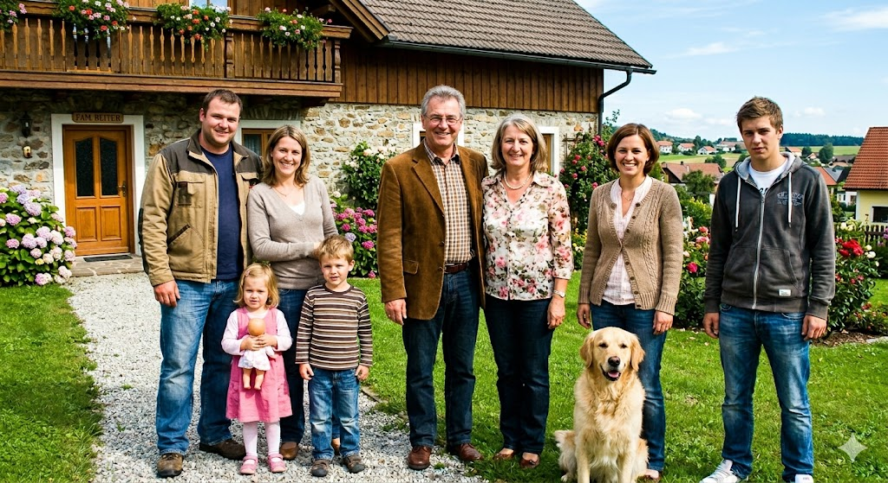
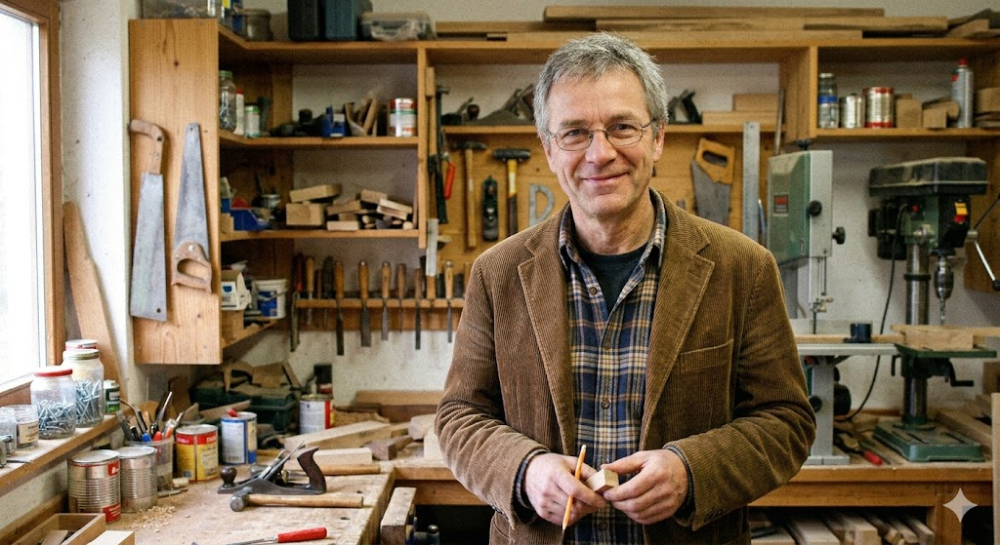
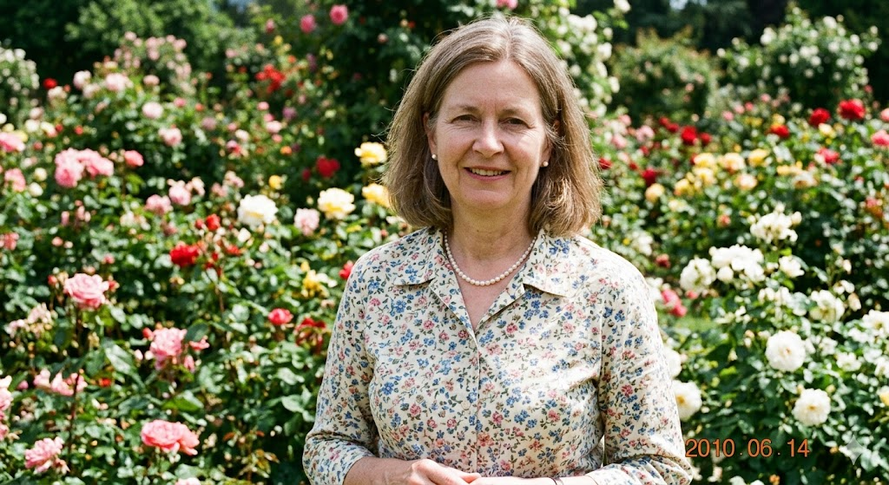

Wir freuen uns sehr, dass Sie den Weg auf unsere kleine Internetseite gefunden haben.
In einer Zeit, in der alles immer schneller wird, möchten wir uns hier einen kleinen Raum schaffen,
um unsere Gedanken zu teilen und mit Gleichgesinnten in Kontakt zu treten.

Ich bin im Ruhestand und verbringe meine Zeit gerne mit dem Lesen von Fachzeitschriften und der Pflege meines kleinen Werkzeugkellers. Ich versuche mich nun langsam an die digitalen Möglichkeiten heranzutasten, auch wenn mir die Technik manchmal Kopfzerbrechen bereitet.

Mein Herz schlägt für den Garten und das Backen von traditionellen Torten. Ich bin zwar skeptisch, was die heutige Zeit angeht, aber neugierig auf neue Impulse und interessante Bekanntschaften, die man über das Netz knüpfen kann.
Kontaktieren Sie uns gerne!
Wir sind immer offen für freundliche Nachrichten, Ratschläge für den Ruhestand oder interessante Angebote, die unser Leben bereichern könnten.
E-Mail an Hans: hans@wurgenknarcht.at
E-Mail an Angela: angela@wurgenknarcht.at